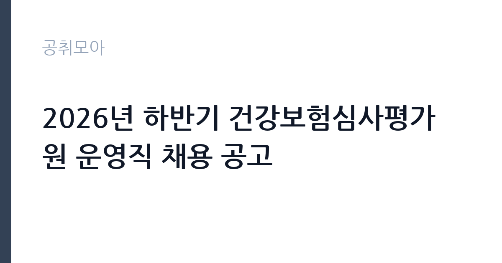

[공공기관] 2026년 하반기 건강보험심사평가원 운영직 채용 공고
건강보험심사평가원 · 서울 · 마감 2026-10-21 (D-14) · 출처 잡알리오

한눈에 보는 모집 조건
| 기관 | 건강보험심사평가원 |
|---|---|
| 공고명 | 2026년 하반기 건강보험심사평가원 운영직 채용 공고 |
| 고용형태 | 정규직 |
| 근무지 | 서울 |
| 게시일 | 2026-10-07 |
| 마감일 | 2026-10-21 (D-14) |
지원자격, 이렇게 읽으세요
- 공공기관 채용공시
- 세부 조건은 원문 공고문 확인
직무별 자격요건은 원문 공고문에 상세히 안내되어 있습니다. 일반사무원은 자격과 경력에 제한이 없어 학력과 전공, 나이와 무관하게 지원할 수 있습니다. 일반사무원 보훈 전형은 접수 마감일 기준으로 취업지원 대상자에 해당하는 분만 지원할 수 있으며, 국가유공자와 독립유공자, 보훈보상대상자, 고엽제후유의증 환자, 5.18 민주유공자, 특수임무유공자 등 관련 법률의 취업지원 정의 중 하나라도 해당하면 됩니다. 산업안전관리원은 안전 관련 자격이나 경력을 요구하므로 원문에서 본인 해당 여부를 확인해야 합니다. 공통 결격사유와 병역, 연령 기준도 공고일 기준으로 충족해야 합니다.
이 공고의 포인트
이 공고의 매력은 일반사무원 문턱이 낮다는 점입니다. 자격증과 경력을 묻지 않아 처음 공공기관에 도전하는 분도 지원할 수 있습니다. 심평원은 건강보험 진료비 심사와 의료 질 평가를 맡는 준정부기관으로, 기관 인지도와 복지가 안정적이라는 평가가 많습니다. 보훈 전형이 별도로 마련되어 있어 취업지원 대상자는 경쟁 부담이 상대적으로 적습니다. 근무지가 원주 본원뿐 아니라 서울과 부산, 창원, 수원 등 지역본부를 포함하므로 희망 근무지를 고려해 지원할 수 있습니다. 다만 직무별 채용 인원과 배치 지역은 원문에서 확인해야 합니다.
전형은 어떻게 진행되나
전형은 원문 공고문에 안내된 절차를 따릅니다. 공공기관 운영직 채용은 서류전형과 필기전형, 면접전형 순으로 진행되는 것이 일반적입니다. 서류전형에서는 응시자격 충족 여부와 자기소개서를 평가하며, 보훈 전형은 취업지원 대상 증빙서류가 추가로 필요합니다. 필기전형은 NCS 직업기초능력평가가 중심이 되는 경우가 많고, 사무직은 직무수행능력 평가가 포함되기도 합니다. 면접은 직무 이해도와 조직 적합성을 묻는 구조화 면접이 일반적입니다. 세부 일정과 배점, 합격 배수는 원문 공고문에서 확인하시기 바랍니다.
원문에서 확인한 전형 방식
□ 직무별 자격요건 ○ 일반사무원: 자격 및 경력 무관(제한 없음) ○ 일반사무원(보훈): 입사지원서 접수 마감일 기준, 다음 각 법률의 취업지원 대상자에 대한 정의에 하나라도 해당하는 자 - 「국가유공자 등 예우 및 지원에 관한 법률」 제29조(취업지원 대상자 등) - 「독립유공자예우에 관한 법률」 제16조(취업지원) - 「보훈보상대상자 지원에 관한 법률」 제33조(취업지원 대상자 등) - 「고엽제후유의증 등 환자지원 및 단체설립에 관한 법률」 제7조의9(취업지원) - 「5·18민주유공자예우 및 단체설립에 관한 법률」 제20조(취업지원 대상자 등) - 「특수임무유공자 예우 및 단체설립에 관한 법률」 제19조(취업지원 대상자 등) ○ 산업안전관리원: 다음 어느 하나에 해당하는 자 - 「산업안전보건법」에 따른 산업안전지도사 자격을 취득한 자 - 「국가기술자격법」에 따른 산업안전기사 자격 취득 후 안전 관련 경력 3년 이상인 자 ○ 전기관리원[파트원]: 다음 어느 하나에 해당하는 자 - 「국가기술자격법」에 따른 전기산업기사 이상의 자격을 취득한 후 시설관리 전기분야 실무 경력 3년 이상인 자 - 「국가기술자격법」에 따른 전기기능사 이상의
이런 분께 추천해요
- 자격증 없이 공공기관에 처음 도전하는 분께 추천합니다. 일반사무원은 자격과 경력 제한이 없습니다.
- 취업지원 대상자인 보훈 가족께 추천합니다. 별도 전형으로 선발하므로 기회를 살리기 좋습니다.
- 산업안전 자격을 보유한 분께 추천합니다. 안전관리 경력을 공공기관에서 이어갈 수 있습니다.
지원 전 체크리스트
- 직무별 자격요건에서 본인 해당 분야의 응시 조건을 확인했습니다.
- 보훈 전형 지원자는 취업지원 대상 증빙서류의 발급 가능 여부를 확인했습니다.
- 자기소개서 항목과 글자 수, 블라인드 기재 금지 사항을 확인했습니다.
- 마감일인 10월 21일 이전에 온라인 접수를 마치고 접수증을 저장했습니다.
모집 일정과 제출 타이밍
마감일은 2026년 10월 21일입니다. 공공기관 채용은 마감일에 접속이 몰리므로 미리 접수하는 것이 안전합니다. 서류합격자 발표와 필기, 면접 일정은 원문 공고문의 전형 일정을 따릅니다. 보훈 증빙서류나 자격증 사본 발급에 시간이 걸릴 수 있으니 이번 주 안에 준비하시기 바랍니다. 필기전형이 예정되어 있다면 NCS 기본서 한 권을 정해 매일 시간을 재고 푸는 연습을 시작하시기 바랍니다.
직무 이해하기: 공공기관
심평원 일반사무원은 심사 지원과 행정, 민원 응대, 자료 관리 등 기관 운영 실무를 맡습니다. 진료비 심사 자료를 정리하고 의료기관과 심사 조정 업무를 지원하며, 지역본부에서는 관할 의료기관 관련 행정 업무를 수행합니다. 산업안전관리원은 사업장 안전 점검과 위험성 평가, 직원 안전교육을 담당합니다. 건강보험 제도와 의료 현장에 대한 이해가 업무 적응에 도움이 되며, 정확한 문서 처리와 협업 능력이 중요하게 평가됩니다. 본원과 지역본부 중 어디에 배치되느냐에 따라 출퇴근 환경이 달라지므로 배치 기준을 원문에서 확인하시기 바랍니다.
자기소개서 작성 팁
자기소개서에서는 공공기관의 역할에 대한 이해를 보여주는 것이 중요합니다. 일반사무원 지원자는 정확한 사무 처리와 민원 응대 경험을 사례로 쓰고, 데이터 정리나 협업 경험을 수치와 함께 제시하시기 바랍니다. 보훈 전형 지원자는 국가에 대한 기여 의지와 성실성을 직무와 연결하면 좋습니다. 산업안전관리원 지원자는 현장 안전 개선 경험과 관련 법규 이해를 구체적으로 쓰시기 바랍니다. 건강보험 제도의 공공적 의미에 공감한다는 동기를 한 문단으로 정리하면 마무리가 좋습니다.
면접 준비 포인트
면접에서는 직무 이해도와 공직 가치관을 함께 평가합니다. 일반사무원 지원자는 반복 행정 업무를 성실히 수행하겠다는 태도와 민원 응대 시나리오 답변을 준비하시기 바랍니다. 보훈 전형은 지원 동기와 조직 기여 의지를 묻는 질문이 나올 수 있습니다. 산업안전관리원은 현장 위험 요소 파악과 개선 사례를 단계별로 설명할 수 있어야 합니다. 블라인드 면접이 원칙인 경우가 많으니 출신이나 가족 언급 없이 직무 역량만으로 답변을 구성하시기 바랍니다.
급여·근무조건 읽는 법
보수는 공공기관 보수 규정에 따르며 기본급에 수당과 상여금, 성과급이 더해지는 구조입니다. 채용플랫폼 집계에 따르면 건강보험심사평가원 평균연봉은 4,247만원 수준으로 안내되어 있으나, 이는 사용자 입력 기반의 집계성 정보이므로 직군과 경력에 따라 달라질 수 있습니다. 정확한 기본급과 수당, 상여 금액은 원문 공고문의 보수 안내에서 확인하시기 바랍니다. 지역본부 배치 시에는 해당 지역 수당 기준을 적용받으며, 명절휴가비와 정근수당은 별도 기준에 따라 지급됩니다. 실수령액은 연금과 보험, 세금 공제 후 금액이므로 세전 연봉과 구분해서 이해하시기 바랍니다.
자주 묻는 질문
- 자격증이 없어도 지원할 수 있습니까
일반사무원은 자격과 경력에 제한이 없어 지원할 수 있습니다. 다만 산업안전관리원은 관련 자격이나 경력이 필요하므로 직무별 자격요건을 확인하시기 바랍니다. - 근무지는 어디입니까
본원은 강원 원주이며 서울과 부산, 창원, 수원 등 지역본부 배치가 이루어집니다. 직무별 배치 지역과 인원은 원문 공고문에서 확인하시기 바랍니다. - 보훈 전형은 누가 지원할 수 있습니까
접수 마감일 기준으로 관련 법률의 취업지원 대상자에 해당하는 분이 지원할 수 있습니다. 증빙서류를 미리 발급받아 두시기 바랍니다.
함께 보면 좋은 공고
[공공기관] (2026-7) 부산신용보증재단 제4차 기간제 계약직원 채용공고 — 마감 2026-10-15[공공기관] 강원연구원 육아휴직 대체인력 공개채용 공고 — 마감 2026-10-19[공공기관] 강원연구원 단기근로자(일용직) 공개채용 공고 — 마감 2026-10-19출처: 잡알리오 공개정보를 바탕으로 공취모아가 정리한 안내글입니다. 모집 조건·일정은 변경될 수 있으니 지원 전 반드시 원문 공고문을 확인하세요. 본 글은 정보 제공용이며 합격을 보장하지 않습니다.